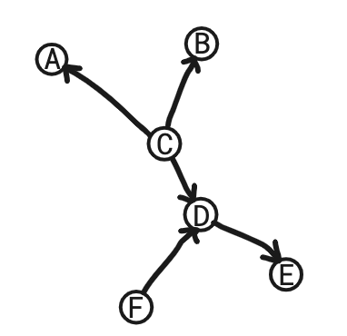
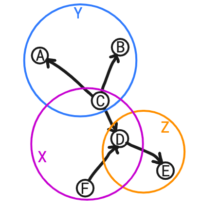
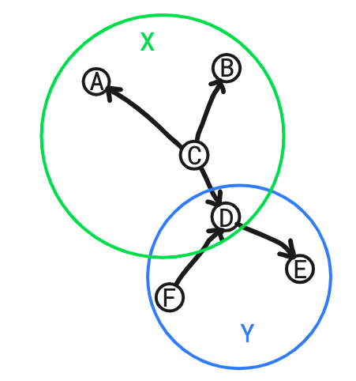

If you have read the previous article, you might wonder how the definition of Context Clusters came about. That is exactly what this article explains.
Besides a management of context amounts, there are also practicalities to consider when using clusters in programming languages. There was one criterium that was quite central: which is that a codebase can be any DAG (directed acyclic graph). This is where folder systems fall short; they are only capable of representing trees. Even though trees do limit context in a hierarchical fashion, we do not consider it expressive enough to model codebases. So that is the first criterium: making the cluster finding algorithm work on any DAG. The secondary idea is that the combination of clusters should form a tree, and not a DAG. When you truly want to have clusters form a DAG, which is not per se a tree, the semantics of your codebase do not make sense anymore. To explain this, let's take a look at an example.
The current Context Clusters are the following, marked with different colors:
Where the hierarchy of clusters is a tree made of the nodes X, Y and Z, with edges X->Y and X->Z.
If we want to break the rule that clusters are connected in a tree-like form, we'd have to break the reverse path rule. We state here that breaking the reverse path rule makes a DAG of clusters possible, given that new semantics will be added to specify clusters. This statement is given here without proof, but we will prove the converse: the reverse path rule implies that clusters form a tree.
Let's try to get rid of the reverse path rule, and start from a different semantics to specify clusters. We'll say that to specify a cluster, you'll need to assign the role of "interfacing parent" to a node. This interfacing parent would in a programming language look like a structure/class. Furthermore, you'll need to specify which nodes belong to the cluster of the interfacing parent. Using those rules, we could separate the previous graph in the following clusters:
Here, we have chosen C as the interfacing parent of the cluster X. We have chosen D as the interfacing parent of the cluster Y. The cluster hierarchy is the graph with nodes X and Y, and the edge X->Y. Besides the burden of:
There's also a semantic problem when you use these clusters in codebases. There are pretty much two main possible code-units for F. First of all F can just be a module, or a structure if you will. In that case F is useless. It will never be accessed indirectly through D, and so it just sits there gathering dust. Secondly, we can try to take into account distributed systems. Now F might be a distributed object, or more abstractly: a function that executes from some device that does have "access" to F. That "remote device" could then call F, which might mutate some state in the cluster. This somewhat diminishes the "swappable" feature of clusters/modules, because now F is dependent on two devices: the "main" codebase, from which it imports D, and a remote codebase, from wherever that may be. Hence we'd prefer if remote objects could not change eachother. Instead, they should have access permissions of eachother. If we have a secondary clock object that acts on its own for instance, we wouldn't want the closk to change certain variables of our program on its own initiative. We'd want the clock object to expose some "time value", which the main codebase can read from the clock object and do with what it wants.
The conclusion is that we should indeed keep our reverse path rule to make it the right choice for certain programming languages
We simply prove that a cluster can have only one parent-cluster. The reverse path rule tells us that eventually we land in the same node if we take a reverse path, or we have already passed it. Now we can just pick the cluster of that node, which leads us to the conclusion that the reverse path lands in the same cluster. Thus we have proven that the Context Clusters are connected in a tree-form